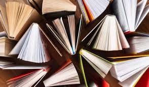
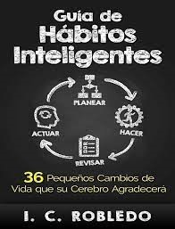
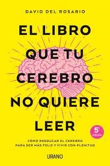
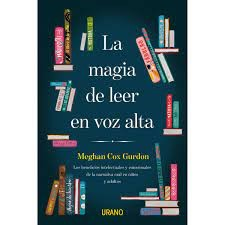
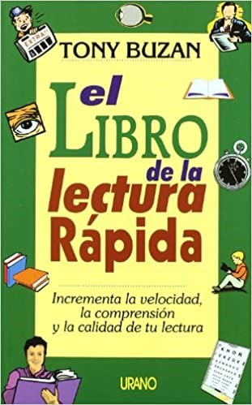
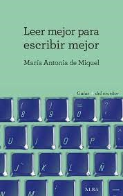
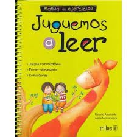

¿Por que es importante leer ?

Ventajas y desventajas sobre la lectura en Digital
Ventajas ____________________________Desventajas
Aqui te dejo un link de un video sobre la lectura :D.
y2mate.com - Por qué es importante la lectura_480p
canal de youtube - Ministerio de Cultura Perú
Aqui te dejo una tabla de los mejores libros que fomenta la lectura :D.
|  | En el libro guía de hábitos inteligentes el maestro de psicología I. C. Roblero recopila 36 hábitos que contribuyen a desarrollar la inteligencia de una manera sencilla y práctica. Ha estudiado la vida de personas altamente inteligentes durante muchos años y concluyo que las personas inteligentes no nacen inteligentes. |
|  | Una propuesta original, útil y amena a medio camino entre guía de inspiración, divulgación científica y filosofía práctica. Una obra que nos muestra que nuestra percepción de la realidad es limitada, explica el funcionamiento del cerebro y propone un camino para cambiar nuestra perspectiva y encontrar la felicidad. |
|  | Basado en estudios científicos que confirman que la lectura en voz alta mejora las capacidades intelectuales de los niños y es beneficiosa también para los adultos. La autora es periodista especializada en literatura infantil en The Wall Street Journal. |
|  | EL LIBRO DE LA LECTURA RÁPIDA contiene técnicas que nos enseñan a utilizar los ojos y el cerebro de manera más eficiente. Numerosos cuestionarios y ejemplos prácticos permiten al lector medir sus progresos a medida que avanza el libro. |
|  | En Leer mejor para escribir mejor, María Antonia de Miquel nos da las claves para pasar de ser lectores pasivos a lectores activos, para adentrarnos en todo aquello que, en una lectura superficial, nos pasa inadvertido en una obra de ficción. |
|  | Una de las funciones más importantes de la escuela y de los padres de familia es hacer de sus alumnos e hijos buenos lectores. La magnitud de esta labor necesita de acciones estratégicas y de materiales adecuados. Con el fin de contribuir a esta labor juguemos a leer libro de lectura, contiene sugerencias de ejercicios y actividades (en la parte inferior de la página) con el propósito de que los alumnos puedan practicar su oralidad y escritura de manera activa, creativa y con sentido social. |
.